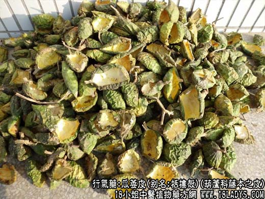
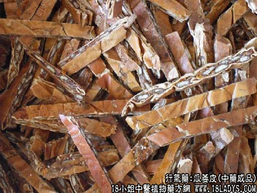

【中药概述】
瓜萎皮，别名：栝楼壳、瓜壳，为葫芦科多年生草质藤本植物栝楼的皮。苦、寒。归肺、胃经。
1．理气除胀：用于胸腹胀满，脘腹胀满等症，常与木香，乌药，橘皮，枳壳等同用。
2．化痰通痹：用于胸痹，结胸等，常与薤白，半夏，桂枝等同用。
3．清肺止咳：用于肺热咳嗽，具有清肺化痰止咳之效，可与贝母，天花粉，桔梗等同用。
【药物形态】
本品常切成2至数瓣，边缘向内卷曲，长6～12cm。外表面橙红色或橙黄色，皱缩，有的有残存果梗；内表面黄白色。质较脆，易折断。具焦糖气，味淡、微酸。
【药效鉴别】
瓜蒌皮以清肺化痰，开胸宽中降气为主，适用于痰热壅阻肺络胸膈，咳嗽胸闷、胸痹胁痛，可配浙贝母，薤白，姜半夏等。
【化学成分】
含三萜皂甙、有机酸及其盐类、树脂、糖类、色素、多种氨基酸及类生物碱物质等。
【用量用法】
6——15g，水煎服，或入丸、散剂。
本文解释权归介绍中草药名称的中药大全所有，本文地址：https://www.daquan.com/post/1971.html